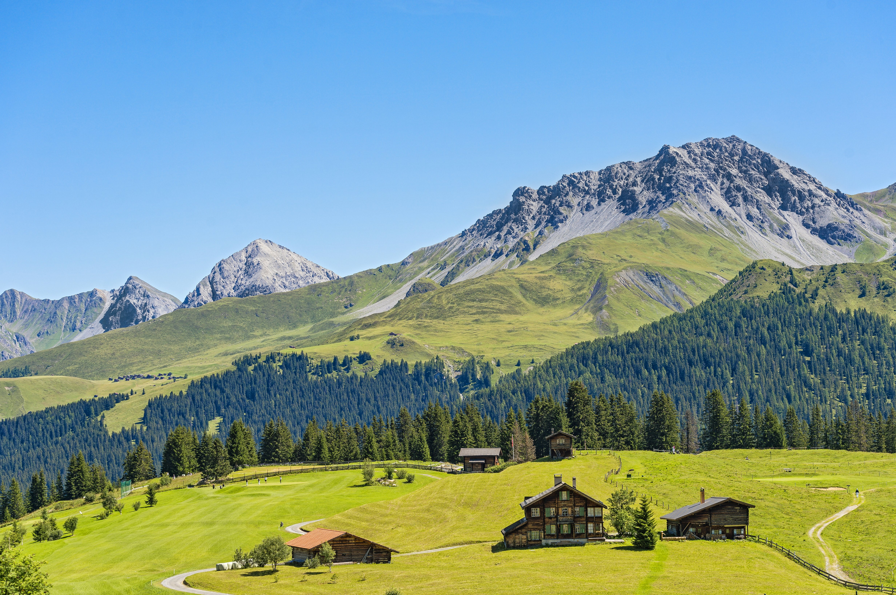

before I start, I am bringing back this layout where everything is sort of centered in the middle with gaps from left and right
funny thing is I just noticed like right now that I completely forgot to implement this layout in 90% of my other blog posts
so we are back with this one
I am also keeping the new looks.

Yes I am still collecting scenery pics
Quick catch up
"soooo you had this whole hope thing and renaissance thing, what are you cooking up now?"
well dear reader... ya boy has been working on stuff but a lot is still a work in progress... maybe in the next blog post ye shall see...
entertainment
There are quite a ton of ways to entertain yourself, it could be through reading some book or reading that uhhh very interesting series of tweets
that kanye has been posting recently. The thing is, if you don't constantly find a new source of entertainment you will eventually get bored
Boredom is one thing the human soul ALWAYS hates. Especially me. I really hate getting bored. So as a hobby for the past couple of years I have been
endulging in the art of BINGE WATCHINGGGG. I was an avid binge watcher back in my days so in this blog post which will be a first part of hopefully many.
I will be discussing a bunch of movies and tv shows I have binge watched, give my thoughts on them and give them like a final score of recommendation.
The Simpsons
Ok, I don't know where to start with this show.
I binge watched like 13 seasons over a winter break or longer. This is genuinely one of the best shows I have ever watched.
the simpsons has this way of writing and fledging out their characters in a way that I never saw before.
They all feel human and real in a way, its really heart warming. yknow I used to always see this show
broadcasted on fox and I would see people mentioning it from here and there and I never really understood what all the love was for
until I really decided to give it a shot myself.
Now I feel like I don't have much to say since I have watched this show so long ago so I will just
kind of skim or write my thoughts down on this show.
The first season was alright not exactly the best starting season ever but I still enjoyed it for what it was worth
now the second season and from there on, that was when things really got good. One thing about the simpsons that really made it fun to watch was
something I call LONG continuity. The way simpsons does continuity is really interesting, like you can see one specific thing or piece of info
mentioned in one of the episodes and then like a season later you can see an entire episode built no that little piece of information. Trust me When
I say this, you are gonna love to see it. Each character has this whole world of theirs explored throughout the many seasons of the show.
I don't exactly remember which season this was but the exploration of krusty the clown's back story was really good and that's just off the top of my
head. Seasons 2-5 are probably some of the best television you will watch.
Now like all great things, fall offs are bound to happen. I saw a lot of people and dedicated fans complaining about it but I never really felt it
too much until I reached like season 11 or 12 where I did start to feel like the show runners were starting to run out of ideas for the show but even then
I didn't exactly feel like the show was worth dropping, its just I had too much simpson fatigue.
The simpsons has always kept a warm spot in my heart since I have discovered it. On terms of recommendation rating, I give it like a GOO WATCH ITTTT
Their character dynamic was always nice to see
Bojack the horseman or something horseman he is like a horse not a pony or a zebra
Bojack horseman is another show that really earns a spot in my heart. I watched it like late last year and I was very skeptical on it at first.
I mean come on look at that animation quality. I felt like I was in for those corny adult animation shows that never really serve any purpose
I guess you can say they are the instagram reels or tiktok of the animation industry in a way. They are easy to watch and get into but at the end
they have zero value and for the first season I really felt like that. I felt that show as just gonna keep going in this direction that I didn't really like
but I kept pushing through cause a friend told me that it was one of the best and most well written shows he has ever seen. I thought he was stupid after the first season.
But boy was I wrong. Season 2 wasn't that big of an improvement but It was still good. I think it took me a while to really get used to the animation style
and get accustomed to how this show works. Its really different than most of the stuff I have watched. I kept watching season 2 until I managed to
reach the final couple episodes of season 2 and that's where things really REALLY took off. The end of season 2 sort of shaped and built the foundations of what was
to come after in the next seasons. I am not going to spoil any part of this show cause you really deserve to watch it and enjoy it for yourself.
Man after finishing that show I felt weird in a way. I felt sort of empty. The writing on this show is so well crafted, every single character actually
feels real. They feel real just like us, going back to bad habits, having trouble moving on from things, having trouble in their decision making.
It all feels too real. Bojack horseman in a way is a bad person, he just has a destructive personality but I always found myself chuckling a little
when he would keep trying to shift attention to himself whenever it was drawn away from him.
Overall, If you are looking for a show about growth and humanity in a way then bojack horseman is gonna be that warm spot for you. I highly recommend it.
The view from the halfway down (one of the best episodes I have seen from animation in general.)
Election
This is acutally a movie I watched like right now so I thought about giving my direct fresh thoughts on it. To clarify its the movie named Election which
which was released in 1999. Now my first thoughts are... well I am just frustrated I don't know really know what to say, It doesn't leave
the viewer satisfied in any shape or form with any sort of good ending. Matter of fact I am just kinda confused by the ending? Like
it does sum things up and finish off the story being told but I kind of wanted better for the main character.
In a way its basically
american dream 2.0 with the weird student and teacher relationship and all that, and then the main character gets screwed over gradually
throughout the movie and they just gaslight themselves into trying to be happy. Its kind of exactly that in a way but more light hearted way
compared to american dream. At the start the movie seemed like it had potential to be a really fun entertaining movie and it kinda is actually
I was entertained enough to finish it so thats that.
The character writing is pretty decent but not to a crazy point of relation when compared to
characters from a show like bojack horseman, but that is obviously an unfair comparison cause this is a movie and bojack horseman is a show. I thought
I would just point that out. Paul metzler is goated...
goated boy...
The Florida Project
and the final review for this blog post! The florida project is weirdly heart warming, one of those movies
that make you appreciate what you have while still warming your heart in a way. Willem Dafoe's acting on it was
phenomenal to say the least. It was the very first time for me to see him in a role where he isn't some sort of scary
lunatic.
Also how the hell do those kids act so well? I keep forgetting that those are actual kids acting, they do a pretty good
job at nailing the role of curious kids who were raised by people having a hard time. They feel as real as those annoying
toddlers you meet.
It started out good and then towards like the middle part I felt like it was just kind of dragging on for no reason to increase
the movie's length and it kept adding things that it didn't build much on so that kind of frustrated me in a way because even when
the movie ended it still left a good bit of stuff unexplained. But holy crap man that ending was BRUTAL seriously the acting in it
was just nailed by EVERYONE it was really really good and heart breaking at the same time. If you are looking for a new experience that
feels a little a familiar in a way then you gotta check this one out
Movie had a lot of memorable parts ngl
peace out for now.... I am jaking it.....
I guess that's all for today's blog post, my original plan was to upload it like a week after the first one but I guess
life carried me real hard for me to be posting it the next month but I PROMISEEEE to be more active on this blog, there is a
lot of stuff I want to talk about and now that I finally nailed a pretty good layout I think it will be more blog posts from here on
ya feel me. The next blog post should probably be an update on a bunch of passion projects I am working on or it could be some sort of
review like this one but on some specific niche games. Who knows. See you like idk next blog post